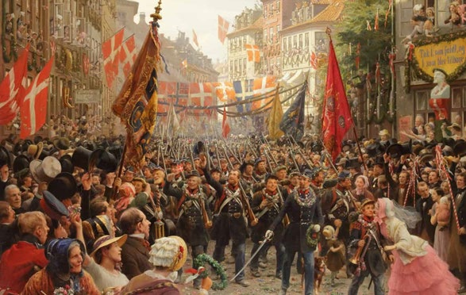
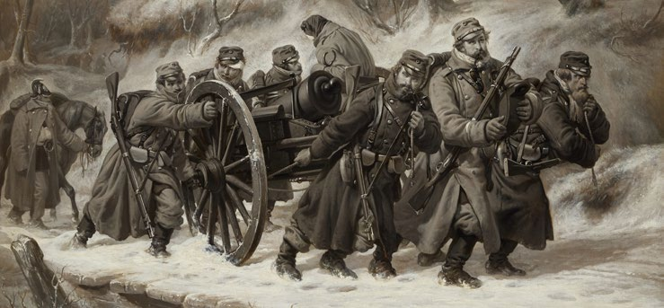

1.7 – DE SLESVIGSKE KRIGE (1848-64)
sidde 24
(1848-64)
I første halvdel af 1800-tallet voksede nationalbevidstheden i Europa, herunder i Danmark. Det samme gjorde modsætnings forholdet mellem dem, der følte sig henholdsvis danske og tyske i det danske rige. Det udløste i 1848-50 en borgerkrig mellem kongeriget Danmark og tysksindede oprørere i hertug dømmerne Slesvig og Holsten, hvor den danske konge også var regent. Danmark vandt krigen i første omgang, men problemet var ikke løst. I 1864 udløste de nationale spændinger igen en krig. Denne gang vandt tyskerne, og Danmark mistede både Slesvig og Holsten.
DEN 1. SLESVIGSKE KRIG
Den danske helstat bestod i midten af 1800-tallet af det danske kongerige samt hertugdømmerne Slesvig og Holsten. Den danske konge regerede i alle tre dele af riget
Den øgede nationalfølelse og de demokratiske tanker skabte spændinger mellem den dansktalende og den tysktalende del af befolkningen. Befolkningen i Holsten var tysk, og de fleste danske politikere så det som naturligt, at holstenerne gerne ville rive sig løs fra Danmark og tilslutte sig Det Tyske Forbund, men i Slesvig var der både dansktalende, som ville forblive en del af Danmark, og tysktalende indbyggere, som ville løsrive sig og tilslutte sig Det Tyske Forbund sammen med Holsten. Det kaldtes det slesvigske problem. Folk og politikere på begge sider af grænsen diskuterede, hvor den danske grænse skulle gå.
I 1848 fik Slesvig og Holsten afslag på deres krav om en selvstændig fri forfat ning for Slesvig og Holsten. Omvendt stod det klart, at Danmark ønskede, at den danske grundlov, der var på vej, også skulle gælde for Slesvig, som dermed ville blive forenet med Danmark men adskilt fra Holsten. Disse modstridende ønsker førte til borgerkrig mellem slesvigske og holstenske oprørere på den ene side og Danmark på den anden side.
Det Tyske Forbund og den stærkeste af de tyske stater, Preussen, bakkede op og sendte et stort antal soldater ind i krigen på hertugdømmernes side.
Læremateriale Til Indfødsretsprøven
sidde 25
Soldater fra de slesvigske krige modtager hyldest af befolkningen.
Soldater fra de slesvigske krige modtager hyldest af befolkningen.
I 1849 udkæmpede Danmark og slesvig-holstenerne en række slag. Et af dem var ved Fredericia i juli, hvor den danske hær sejrede. I 1850 blev Det Tyske Forbund og Preussen presset af Rusland til at trække deres hjælpetropper ud af konflikten. Derefter vandt den danske hær en række afgørende sejre, blandt andet ved Isted i juli 1850. Det var det blodigste slag under krigen med tusindvis af døde og sårede. Efter en mægling fra de europæiske stormagter blev resultatet, at de to hertugdømmer fortsat skulle indgå i den danske helstat. Den løsning skulle vise sig ikke at holde længe. Treårskrigen i perioden 1848-50 kaldes også Den 1. Slesvigske Krig.
DEN 2. SLESVIGSKE KRIG
Efter Den 1. Slesvigske Krig havde Danmark lovet stormagterne, at Danmark ikke ville binde Slesvig tættere til sig end Holsten. Men Danmark brød sit løfte. I 1863 vedtog den danske rigsdag presset af folkestemningen en ny fælles forfat ning for både Danmark og Slesvig, men ikke for Holsten. De tyske stater opfat tede den dansk-slesvigske forfatning som et brud på den aftale, der var indgået. Preussen, hvis politiske leder var den magtfulde ministerpræsident Otto von Bismarck, erklærede derfor sammen med Østrig krig mod Danmark i februar 1864. Denne krig kaldes Den 2. Slesvigske Krig.
I modsætning til den 1. Slesvigske Krig i 1848-50 fik Danmark denne gang ikke hjælp af de europæiske stormagter. Danmark blev angrebet sydfra, og de danske styrker forventede, at Dannevirke ville beskytte dem mod angrebet. Dannevirke var et forsvarsanlæg, som siden vikingetiden havde været en stærk forsvars linje. Men i februar 1864 måtte den danske hær evakueres i al hast fra Danne virke, fordi modstanderne var i overtal.
Læremateriale Til Indfødsretsprøven

sidde 26
Dele af den danske hær trak sig nordpå i Jylland. Hovedparten af soldaterne holdt dog forsvarsstillingen ved Dybbøl nær Sønderborg. Den 18. april angreb preusserne Dybbøl efter et langvarigt bombardement, og de underlegne danske styrker led nederlag. Hele Jylland blev besat af fjendtlige styrker, og da preus serne i slutningen af juni også erobrede øen Als, måtte de danske politikere indse, at krigen var tabt.
Nederlaget i 1864 var en katastrofe for Danmark. Danmark måtte afstå Slesvig, Holsten og det lille hertugdømme Lauenborg til Preussen og Østrig. Danske soldaters ti
Danske soldaters tilbagetrækning fra Dannevirke i 1864.
Den danske konge havde med ét mistet cirka to femtedele af sin befolkning og en tredjedel af sit territorium, som derefter bestod af det egentlige Danmark samt en række sparsomt befolkede lande: Grønland, Færøerne og Island samt – indtil 1917 – de tre små dansk-vestindiske øer.
Dermed fik riget efter 1864 en mere ensartet befolkning end nogensinde før. Langt hovedparten af befolkningen talte samme sprog, havde samme forfatning og var kulturelt ret ens, selv om der stadig var stor forskel på rig og fattig. I modgangen efter nederlaget i 1864 voksede den danske nationale identitet sig endnu stærkere, og sprog og kultur kom til at betyde meget. Mange sønderjyder boede nu i det tyske kejserrige syd for grænsen, men følte sig danske. Først i 1920 blev de dansksindede områder i den nordlige del af Slesvig genforenet med Danmark.
Krigen og tabet af hertugdømmerne i 1864 betød, at Danmark nu ubetinget var reduceret til en småstat helt uden indflydelse på de europæiske stormagters beslutninger. Bismarck havde i 1871 samlet de tyske stater i et stærkt kejser rige, og Danmark stod nu helt i skyggen af sin store nabo mod syd. Der var nu stor bekymring for, at Danmark ville blive helt udslettet som en selvstændig stat. For at sikre fortsat overlevelse søgte Danmark for næsten enhver pris at undgå at involvere sig i internationale konflikter. Sikkerhedspolitisk valgte Danmark derefter at være strengt neutral og opretholdt kun et svagt militært forsvar.
Læremateriale Til Indfødsretsprøven

Fonte: Læremateriale til Indfødsretsprøven, SIRI.